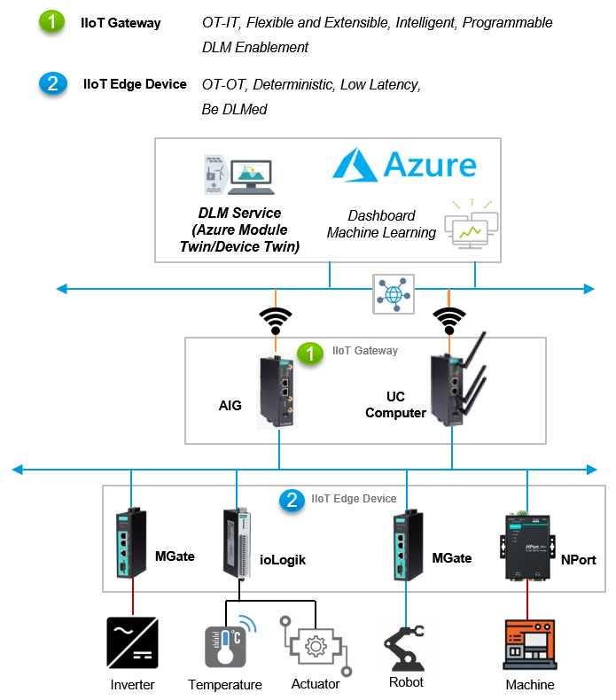
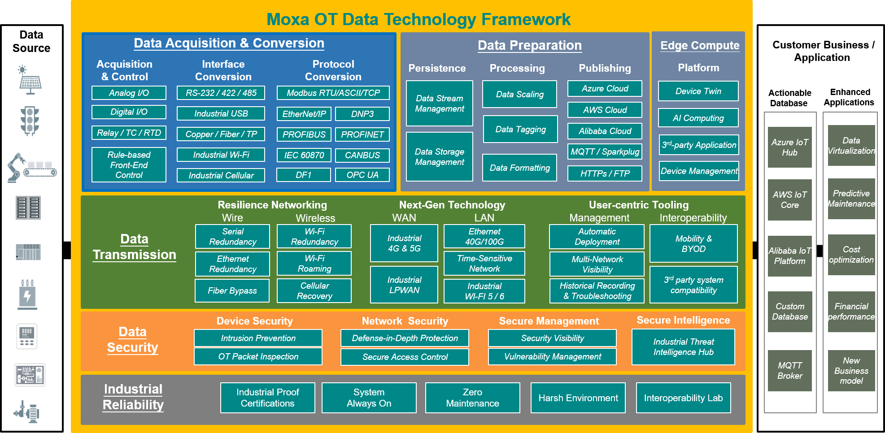
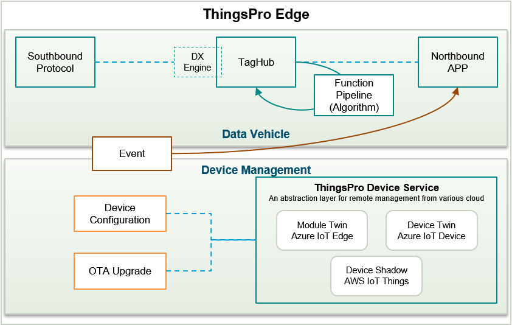
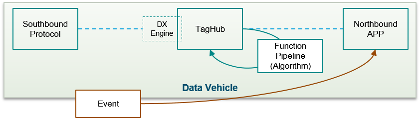
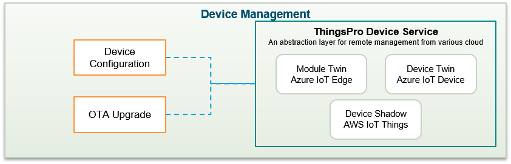

What Is ThingsPro Edge?
ThingsPro Edge is an IIoT edge gateway software that runs on Moxa IIoT Gateways (Moxa's industrial-grade edge computers) enabling you to close the gap between sensors and cloud applications. The containerized software architecture of ThingsPro Edge brings an extensible runtime experience with secure and reliable life-cycle management to functional modules.
ThingsPro Edge offers an easy-to-use user interface to: acquire data from sensors and other field devices, manipulate or filter data locally before sending it out to your applications, and secure data transmission during uploads to popular cloud platforms or your application/database. With the built-in RESTful API, integrating these capabilities into your system is more straightforward than ever.
System Architecture
ThingsPro Edge can fit into your sensor-to-cloud IIoT solution and help simplify application design and development.

What can ThingsPro Edge offer?
ThingsPro Edge is designed to enable global IIoT businesses by offering them an integrated solution. The most challenging step in digital transformation of a business is connecting to the IT field without breaking the existing OT network. In association with system integrators (SIs) and independent software vendors (ISVs), Moxa can help enterprises conquer these complexities by offering a simplified, secure, and reliable OT data transportation solution. The following illustration shows how ThingsPro Edge works on top of the Moxa Edge computing platform to play an essential role in secure and robust Data Ingestion, Processing, and Transmission.

- Intuitive Web GUI
ThingsPro Edge is configured and managed using standard web technologies. You no longer need to use a command line interface to configure Modbus settings for device connections and Azure connection strings and certificates. You can use the intuitive web GUI to connect IIoT gateways and configure the network and system settings, create device tags, and monitor the runtime status, all from a computer on the network.
- Integration With the Azure IoT Hub
In addition to managing Moxa's IIoT Gateways from ThingsPro Edge's Web GUI, you can now configure, monitor, and control these Gateways from the Azure portal. ThingsPro Edge Device Service integrates device twins, direct methods, and device-to-cloud messages into ThingsPro Edge to realize seamless remote monitoring and control from the cloud.
- Streamlined Sensor-to-cloud Data Transportation
With ThingsPro Edge, transporting your data from the assets at the edge to your business has never been easier! If you are building a cloud application, Modbus and other OT-protocol applications help you acquire data from your edge devices. You can then use Azure or other cloud connectivity applications to publish the taged data to the cloud where you can build you applications.
- Custom Payload
ThingsPro Edge makes it easy to publish acquired data to your applications and systems. You no longer require to develop programs to manipulate the message format to suit your applications or systems. ThingsPro Edge helps you manipulate data without requiring any programming skills.
- Rapid Application Development
ThingsPro Edge is designed for rapid development so that you can quickly create software applications for autonomous data processing and event-triggered actions or alarms.
- Secure Design
ThingsPro Edge helps you maintain the integrity of data during transmission and processing. The SecureBoot function and a built-in Trusted Platform Module (TPM) offer strong data protection for your device.
- Robust OTA Upgrade
Keeping the software and firmware on your device up-to-date can effectively help prevent cyberattacks. However, updating devices located in remote unmanned sites is a big challenge for most administrators. ThingsPro Edge's robust over-the-air (OTA) updates cover both software application and device firmware upgrades. The resume capability ensures that you can get the upgrade pack even with intermittent cellular connectivity and the roll-back mechanism will enable your system to recover from a failed installation.
In a nutshell, the dual-track architecture represents the core values of ThingsPro Edge.
- The Data Vehicle component offers the capabilities to transport the OT data as per your requirement.
- The Device Management component simplifies remote monitoring and control of your Moxa IIoT gateways.

Data Ingestion, Processing, and Distribution
Due to the complex nature of OT-control networks, one of the biggest challenges is devising different methods to collect and process data from different types of assets at the edge. Using ThingsPro Edge, you can choose a Fieldbus protocol such as Modbus or set up your own way to handle data and leave the rest to the software. ThingsPro Edge can ingest the data and tag them for efficient processing. The built-in Cloud connectivity APP will help you distribute data to popular cloud platforms, where your applications or databases are located.

Device Management
Device configuration, in most cases, is a one-time effort. However, you may require troubleshooting issues in the system more often, especially during the development or PoC stage. ThingsPro Edge can help you take care of both PoC and production scenarios. The Moxa IIoT gateways are accessible on your network via the Web GUI and once they are deployed in the field, the device twin along with the ThingsPro Edge device service will help bridge the Moxa devices with the Azure portal for seamless configuration, monitoring and control.
